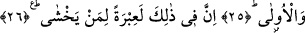

SANA MUSA’NIN HABERİ
GELDİ Mİ?
15. (Habibim!) Sana Mûsâ’nın haberi geldi mi?
16. Kutsal vâdi Tuvâ’da Rabbi ona şöyle seslenmişti:
17. “Fir’avn’a git! Çünkü o çok azdı”
18. De ki: “Arınmayı ister misin?
19. Ve seni Rabbimin yoluna iletmemi ister misin? Böylece ondan korkarsın.”
20. Ve ona en büyük mûcizeyi gösterdi.
21. (O ise) hemen yalanladı ve isyan etti.
22. Sonra (inkâr) için olanca çabasını göstermek üzere sırtını döndü.
23. Derhal (adamlarını) topladı ve (onlara) bağırdı.
24. “Ben sizin en yüce Rabbinizim!” dedi.
25. Allah onu, (herkese ibret olarak) dünya ve âhiret azabıyla cezâlandırdı.
26. Elbette bunda korkan kimseler için büyük bir ibret vardır.
Bu cümle, kavminin yalanlamasından dolayı Peygamber Efendimiz (s.a.)’e teselli
verici başlangıç cümlesidir. Dolayısıyla bu âyet-i kerime Mekke kâfirlerinden daha
güçlü ve daha büyük olan Fir’avn’un başına gelenlerin aynısının onların da başlarına
geleceğini bildirmek sûretiyle Peygamberimiz (s.a.)’i teselli etmektedir.
“/sana geldi mi?” ifâdesinin mânâsı; “bundan ibret al” demektir Veya bu ifâde,
Peygamber Efendimiz’i Mûsâ’nın sözünü dinlemeye teşvik ve bu konuda haber talep
etmeye yönlendirmek içindir. Burada sanki şöyle denmektedir: “Bundan önce sana
Mûsâ’nın sözü geldi mi? Yoksa ben onu sana haber vereyim mi?”
Hasan Basrî’nin değerlendirmesine göre cümle, Allah’tan Peygamberi’ne Hz.
Mûsâ’nın sözlerini bildirme anlamı ifâde etmektedir. Bu ifâde tıpkı birisinin belde
halkının başına gelenleri bilmeyen arkadaşına dönüp de “bu belde halkının başına gelen
sana ulaştı mı?” demesi gibidir. Şu halde bu ifâdenin kullanılmış olması, Hz. Mûsâ’nın
sözünün Peygamber Efendimiz’e haber verilmesi içindir. Peygamber Efendimiz’e henüz